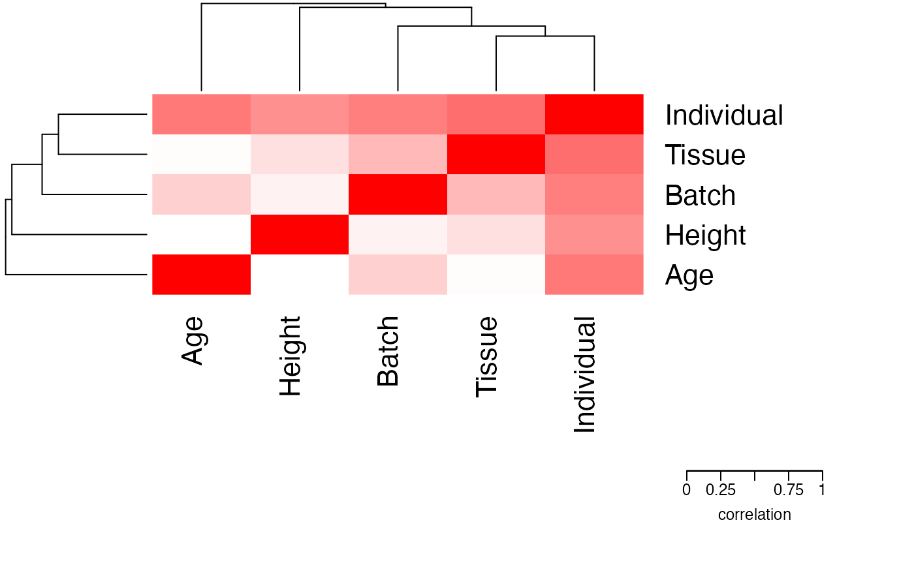

Assess correlation between all pairs of variables in a formula
Details
Canonical Correlation Analysis (CCA) is similar to correlation between two vectors, except that CCA can accommodate matricies as well. For a pair of variables, canCorPairs assesses the degree to which they co-vary and contain the same information. Variables in the formula can be a continuous variable or a discrete variable expanded to a matrix (which is done in the backend of a regression model). For a pair of variables, canCorPairs uses CCA to compute the correlation between these variables and returns the pairwise correlation matrix.
Statistically, let rho be the array of correlation values returned by the standard R function cancor to compute CCA. canCorPairs() returns sqrt(mean(rho^2)), which is the fraction of the maximum possible correlation. When comparing a two vectors, or a vector and a matrix, this gives the save value as the absolute correlation. When comparing two sets of categorical variables (i.e. expanded to two matricies), this is equivalent to Cramer's V statistic.
Note that CCA returns correlation values between 0 and 1.
Examples
# load library
# library(variancePartition)
# load simulated data:
data(varPartData)
# specify formula
form <- ~ Individual + Tissue + Batch + Age + Height
# Compute Canonical Correlation Analysis (CCA)
# between all pairs of variables
# returns absolute correlation value
C <- canCorPairs(form, info)
# Plot correlation matrix
plotCorrMatrix(C)
